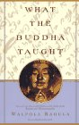
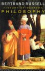
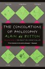
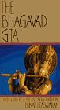
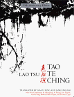
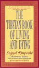
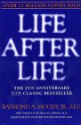
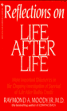
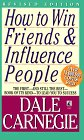

Books
Books have the ability to make us something higher, to open our mind to the thoughts of others in a way merely interacting cannot. These are books I have read and got something meaningful from, most of them have changed the way I think.
|  | What the Buddha Taught : Dr. Walpola Rahula |
| I have read a number of books about Buddhism, ranging from obscure books about zen, popular asian cartoon books, and even ones which reminded me more of messianical christianity than buddhism. What I wanted though, was a book that was as close to possible to what the buddha actually said, difficult as this is. For some reason neither jesus, buddha or mohammed thought it worthwhile to write down what they thought, and that has been left to people after them. With this in mind I went to the theosophical society in Melbourne and enquired, and I was pointed in the direction of this book, What the Buddha Taught. Since then I have read it a couple of times and enjoyed it immensely, have gotten my partner to read it, given it as a gift, and recommended it many times. I even discussed it with a monk from Sri Lanka who called it "a handbook of buddhism". If you are interested in the buddha, and philosophical wisdom rather than religion, I know of no better book than What the Buddha Taught. The journey to enlightenment starts with a single step, this may be the one for you. |
|  | History of Western Philosophy : Bertrand Russell |
| "Its Connection With Political & Social Circumstances". Bertrand Russell is a wonderful philosopher and author, and this is the classic introduction to philosophy. His range of knowledge is vast, his insight into the great philosophers is excellent, and at times his wit is wonderfully understated. I would recommend this book, as the history of thoughts reveals something about the processes of history that have led to ourselves. When thinking about the great thinkers of the past who have believed such ridiculous things, we can see how long humanity has struggled with its own limitations. The people of most times in history have believed things, sometime based their entire life upon things, that we know today with the perfect science of hindsight to be completely baseless. This is a message from the ages to us all, just how important doubt needs to be integrated into our own thinking, without paralysing us into inaction. Russell's thought is not dry and academic, he doesn't pull his punches, and I can't say the book left me with much respect for any philosopher before relatively modern times. It did however leave me with a profound respect for Bertrand Russell, and I would highly recommend this, or any other of his writings. |
|  | The Consolations of Philosophy : Alain De Botton |
| I first saw the television show "Philosophy: A Guide to Happiness" and enjoyed it immensely. On finding out the series was based on the book, I couldn't wait to read it. Basically it is an attempt to bring philosophy into our everyday lives. Sure a lot of philosophy is stupid and rambles on about whether a chair really exists or not, but over the thousands of years and millions of words, some good has come of it. De Botton is very selective about what he chooses from each philosopher, Neitzsche, who was in actuality a complete bastard, is portrayed as a misguided soul searching for love, and the bits where he recommends taking a whip to a women are left out. Socrates who said all sorts of stupid things about how the gods could be logically proved to exist, becomes a martyr of the highest order dying the perfect death to show us all how unpopularity is often the nobler course. Really when it comes down to it, should we let peoples vast stupidity blind us from the positive and helpful things they might have to say that can help us in our own lives? Even the dullest mind it seems can be really right about something when others around them are blind to it. This is a fabulous book, and I really loved the parts about Epicurus. This book achieves what it sets out to do, give us a philisophical insight into ourselves through the words of the great philosophers, and it is written in a witty, idiosyncratic and amusing style. Very enjoyable read. |
|  | Bhagavad Gita : Various Authors |
| It is hard to imagine a more beautiful and epic poem than the Bhagavad Gita (gita means song). Its theme is a dialogue between Arjuna and Lord Krishna, as they drive a chariot between two parts of an extended family, about to go to war. Arjuna tells Lord Krishna that he has no heart to kill people who are his own blood, and Krishna tells him not to be silly, that he should go calmly into war, because no matter what he does in life, his fate is not his own to command, but rather Lord Krishna's. Anyway once the war mongering is over, it gets much better as Arjuna starts to ask questions about life, what makes a good man (not person as usual in the great religions) etc. Some of the most interesting passages in it are where Krishna says that no matter what god one prays to, they will in the end come to Krishna. Quite refreshing to see the more relaxed nature about other gods of polytheistic religions, it's a pity the followers of hinduism aren't always so relaxed about those worshipping other gods. I have read two versions, the happy modern version, and also a version translated and published in 1885, which I adore because it in many places is written in poetry, I would imagine much more like the original. Yes it is another weird religious book telling you how to live you life with little evidence as to why one should do so, but it manages to do it in a wise and beautiful way. "Fearlessness, singleness of soul, the will always to strive for wisdom, opened hand and governed appetites, and piety, and love of lonely study, humbleness, uprightness, heed to injure nought which lives, truthfulness, slowness unto wrath, a mind that lightly letteth go what others prize, and equanimity and charity which spieth no mans faults; and tenderness towards all that suffer; a contented heart. fluttered by no desires; a bearing mild, modest and grave, with manhood nobly mixed, with patience, fortitude, and purity; An unrevengeful spirit never given to rate itself too high; - such be the signs..of him whose feet are set on that fair path which leads to heavenly birth". There is good in this book, highly recommended. |
|  | Tao Te Ching : Lao Tzu |
| The best word to describe this book would be inscrutable. It has beautiful, poetic lines in it, that one can't help but agree with ("To know and not think we know is the highest; not to know and yet think we know is a disease"), it has simple statements of fact that make one wonder why they are in it ("That which is brittle is easily broken") but the vast majority of it is inscrutable ("May not the space between the heaven and the earth be compared to the bellows?"). I read it a couple of times when I was younger, I enjoyed it a lot, but I'm not sure I understood it. When I was at uni I met some Taoists who were very impressed with my knowledge of the book and invited me around to their house. It turned out to be a sort of temple, and they eventually gave me "Tao" in a ceremony at which I was given secret messages and words of power, which I can't remember now anyway. I ended up figuring out they were some sort of Taoist cult, which was a real shame because they made wonderful vegetarian communal dinners, but thats another story. So I reread most of it recently, and I must say I did enjoy it again, but alas I still don't think I understand it. With a more mature eye I can see a lot more to dislike about the book than I did when I was younger. In a number of places it extolls the virtues of being stupid, it also has a word for the powerful about keeping people stupid "The difficulty in governing the people arises from their having too much knowledge" and then goes on to tell the powerful to if not be stupid, then act stupidly as well "He who governs a state by his wisdom is a scourge to it". Not sure if women aren't intended to govern states, or if they are allowed to use wisdom should they do so. Theres plenty more gems "Therefore the sage, in the exercise of his government, empties the minds, fills their bellies, weakens their will, and strengthens their bones". So it is an interesting book, it has some things in it that almost seem like otherwordly wisdom, and anyone interested in inscrutable oriental thought will enjoy it. It's only a short book, it has millions of followers around the world called Taoists, and it's best known symbol is the yin and yang. If you can understand it you will apparently have all sorts of spooky powers, and for the guys out there if "Erotic Ghost Story" is to be believed, it could also lead to some hot supernatural asian women. |
| Amazon Site | How the Great Religions Began : Joseph Gaer |
| Like it or not statistics say that 96% of humanity consider themselves religious. A huge percentage of them subscribe to a handful of faiths, buddhism, confucianism, taoism, judaism, islam and christianity. If you would like to understand the mind of humanity, what drives it in so much of its day, I'm not sure you can do so without at least a basic understanding of the religions which they follow. If you would understand the world, you should read a book like this, in fact this one is pretty good even if Amazon doesn't have a picture for it, so perhaps read this one. |
|  |
Tibetan Book of Living and Dying : Sogyal Rinpoche |
| The main theme of this book is compassion. The first time I read it, I liked it, but it wasn't until the second time that I read it, it really hit home to me. I guess sometimes it's not enough for a book to be saying something, you also have to be at a point in your life where you are ready to hear it. A sentence which had seemed interesting on my first reading, suddenly sprang to life as an important thought on the human condition. If you are seeking to be a more compassionate person, and learn about Tibetan buddhism, then this is a great book. Having said that, one can't forget that whilst buddhism is at its basis a philosophy, people like religion and especially it seems the Tibetans. Tibetan buddhism is in many ways removed from what it is believed the buddha taught in his lifetime. Indeed Tibetan buddhism strayed into a heirachical, feudal, introspective religion before the Chinese occupation and ongoing genocide in Tibet. Having fled their country, through the monks the world has come to know Tibetan buddhism, and this book is in many ways the pinnacle of the genesis between the compassionate ideals of Tibetan buddhism, and the democratic, free culture of the modern, democratic nations in which the monks now live and work. Compassion is the theme of this book, and compassion is the attribute needed most in our world, so reading this book can only be a positive experience for your life, and for the world which you effect with every movement and breath. |
|  |
Life After Life and Reflections on Life After Life : Raymond Moody Jr. MD. |
 |
| What happens after we die? Why don't we investigate it, amongst other things look at the experiences of people who have been declared clinically dead and survived? The reason we don't is because yet again a bunch of crazy religious people have already decided (or should I say have been told) what happens after death, so there can be no logical debate about it. The debate is so muddied, that it has people who believe without any evidence in some religious wonderland after they die on one side, and on the other people who deny the possbility of life after life purely because it's so obvious the people on the first side have no idea what they are talking about. Thousands, perhaps hundreds of thousands of people have had near death experiences, during which they report surprisingly similar phenomenon. If you are interested in what might really happen when we die, forget the religions, in fact forget everyone who says they know one way or the other. This book made me a little too spiritual for a while, but once I got over that, I think I was a better person for reading it, because I finally knew the truth....that I didn't know. The second book is even better, thats why I had to put both in. |
| Great Philosophes of the East : E.W.F. Tomlinson | |
| This is one of the most influential books I have ever read, and Amazon doesn't know anything about it. I can't even find a decent link to it on the web, so no chance of anyone buying a copy, and I am unlikely to lend it either. It would be wrong to think that this is merely a book about Taoism, Confucianism and Buddhism, it ranges far deeper than that. It was meant to be a companion to his other book called Great Philosophers of the West, and he seems to have tried to cover everything else of major note in this book. It starts out talking about some of the oldest (then) known philosophy that of ancient Egypt, looking at songs and poems with interesting insights familiar to modern man. It moves on to Babylonia, Israel and then settles down to specific religions, in order Zoroastarianism, Hinduism, Buddhism, the Hindu Systems, the Chinese Sages and Mohammed. He doesn't just talk about them, he thinks about them, he inspires you to think about them. It's interesting that many of the best books I have read are dedicated to peoples children, this one his son. I can imagine any intelligent western father would be pleased to share with his son the knowledge that people in other places and times, were thinking deeply and beautifully. We often forget that other parts of the world had advanced civilizations, whilst our forefathers were still hunter gatherers, this book is an antidote to our western centred ways of thought. It is such a pity this book isn't widely published, I've read other similar books but they just weren't anywhere near as good. If you are interested you will just have to come over to my place and read it. |
|  | How to Win Friends and Influence People : Dale Carnegie |
| There are few much more maligned books than this, I first heard about it in high school from a friend who used to joke about the sort of people who read books like it, so often indeed that it stuck in my mind. Well wherever you are Jesse, I'm sorry but I became one of those people who read a book like this. I can only think people dislike it because they baulk at the title and never actually read the book, which is at worst harmless and at best an example of how people should treat each other in a kinder more productive way. It is written from the perspective of those who would be leaders of people, and how to wield that power in such a way as you not only influence people, but you win friends at the same time. It is full of quaint stories and examples which illustrate the points well. For example, the point of listening to all opinions is made by a large group of men with all sorts of machinery trying to remove a truck which had gotten stuck under a bridge, a passing young girl mentioned that letting the tyres down might be a good idea, saving them many hours of trouble because they chose to listen to her. It has stories about many famous people, often American political leaders, and how they dealt with people and problems, showing by the example of some of the most successful people in history how we might do things differently in our own lives. Every one I have gotten to read this book has enjoyed it, most have loved it, some have even bought their own copies and one even bought me an extra lending copy he enjoyed it so much. It is like having a conversation with a wise elderly person about how to get on in the world. |

|
Rediscovering Gandhi : Yogesh Chadha |
| Albert Einstein said of Gandhi: "Generations to come will scarcely believe that such a one as this walked the earth in flesh and blood.". Gandhi was an extraordinarily complex man. Along with his better known qualities he was a believer in the central truth of all religions, he was a passionate vegetarian, wrote many books, was a qualified lawyer and had a fascination with his urine. Reading this book won't leave you with the impression that he was flawless, indeed he can be downright annoying and stubborn in sections of the book. What is the beautiful thing about him, the thing that set him apart from so many others, was his absolute conviction to live according to his ideals. As a London educated lawyer, a comfortable life would have been assured for him, however he could not live such a life in a world teeming with injustice, and he had the self belief that he could do something about it. In a world where compassionate ideals are dismissed as foolishness, here is a man who was prepared to stand for them to the point of great physical harm. In overcoming the British Empire's 100 year occupation of his homeland, he changed the world through his gift of an example of non violent struggle, and for this he will be remembered long after we are gone. Gandhi is one of the great men of history who succeeded against vast odds, and learning about him is a powerful tool for ones own life. "I can see in the midst of death, life persists, in the midst of untruth, truth persists, in the midst of darkness, light persists." - Mohandas K. Gandhi |

|
Mind Watching : Hans and Micheal Eysenck |
| "Why we behave the way we do". There are many ways in which people behave that have been shown by numerous studies to be detrimental to the human condition. Being harsh in disciplining children and distant in their emotional relationships with them was a trait the fathers of Nazi leaders exhibited. Being unconditionally rewarding of a child, whilst a better extreme than the other, is also shown to bring up children with poor emotional self control. Many studies have shown the best way of bringing up emotionally mature children is consistent, well thought out light discipline, from a loving parent interested in their child. In fact it was exactly the sort of people bought up in homes where problems were talked over, rather than resolved by violence, that were more likely to help Jewish people fleeing from the Nazis despite great personal risk to themselves. It is in the application of these sorts of studies that many hopes for a better world lie, studies which show deep human tendencies that are difficult to see in the subjective opinions of our normal day. Psychology has so much to offer us as a society, we can be more intelligent about the way we work towards many goals that we seek. We know what is wrong with the world, poverty, violence, environmental degradation and the barbaric treatment of animals, what we need to know is how to get every else to look up from their self obsessive lives just long enough to help us solve these problems. This is where this sort of book comes in, the path to changing the world passes inexorably through the human mind. |
| Free Online | The Koran/Quran : Various Authors |
| I read the Koran in 1997. It was a real trial to get through it. Mohammed was basically a small time warlord, and the only reason he ever gave for people following his version of the faith was that God said so. If you don't believe in God and you are looking for any other sort of wisdom in this book, I am afraid you will be dissappointed. High points include the part where he says to beat your wife if she is disobedient, or the bit where he says that God has revealed to him he can sleep with pretty much any women he desires, but no one else can. The whole tone he takes as well is disturbing, people who don't believe aren't worth talking to, they are "deaf dumb and blind", and you certainly shouldn't be friends with "people of the book" as he refers to Christians and Jews. I found it really hard to finish the Koran, if people are interested in learning about the Muslim culture which contributed so much to world culture for a thousand years, I would skip the Koran and find a good book on Islam instead. Maybe I just didn't get it but when I had finished my main thought was exactly the same as when I tried to read the Old Testament, "there is no wisdom in this book". |
| Free Online | The Bible : Various Authors |
| I first tried to read the bible beginning with the Old Testament. It was about as much fun as reading the Koran was, and when I got to a part where they were justifying why you should stone someone to death, I decided "there is no wisdom in this book" and stopped reading. Anyway a Christian friend at my work pointed out that the New Testament was nowhere near as long, and lent me a copy so I gave it a read. I must say it is a much more enjoyable and engaging read than the Koran or the Old Testament, and there is a lot more in it to like. There are also some really disturbing parts, anyway I have written a whole article on it, complete with quotes so you can read more about my thoughts here. |
If there is a book you think I should read, send me the reasons why and I will see if I can get around to it. If you are really keen send it to me.
You can search and purchase books from this Amazon box...